xdzip 品牌与补全素材
下面展示实际生产 PNG、原像素参考与透明 SVG 对照，以及真实界面截图。品牌采用四条交错短带和开口 U，母版与小图都使用同一标记几何。
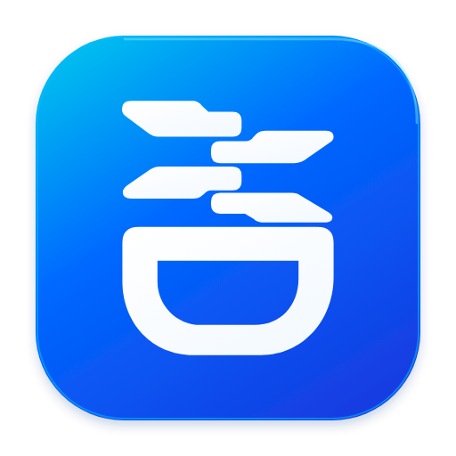
16 px24 px32 px48 px

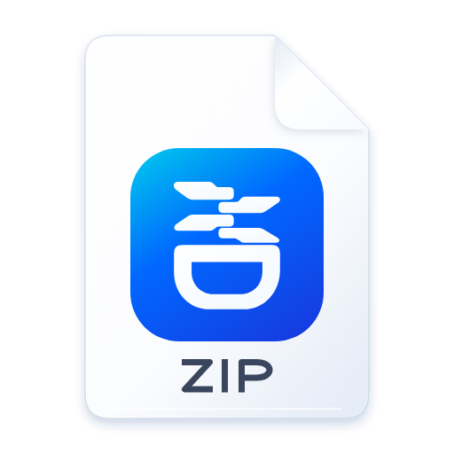
16 px24 px32 px
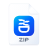
48 px
十三项补图与状态精修
每对左侧是保留背景的原像素切片，右侧是实际透明 SVG 的渲染。两列使用同一显示框；比例量测使用图形墨迹边界，不把切片留白算作圆径。所有原参考保持原字节。
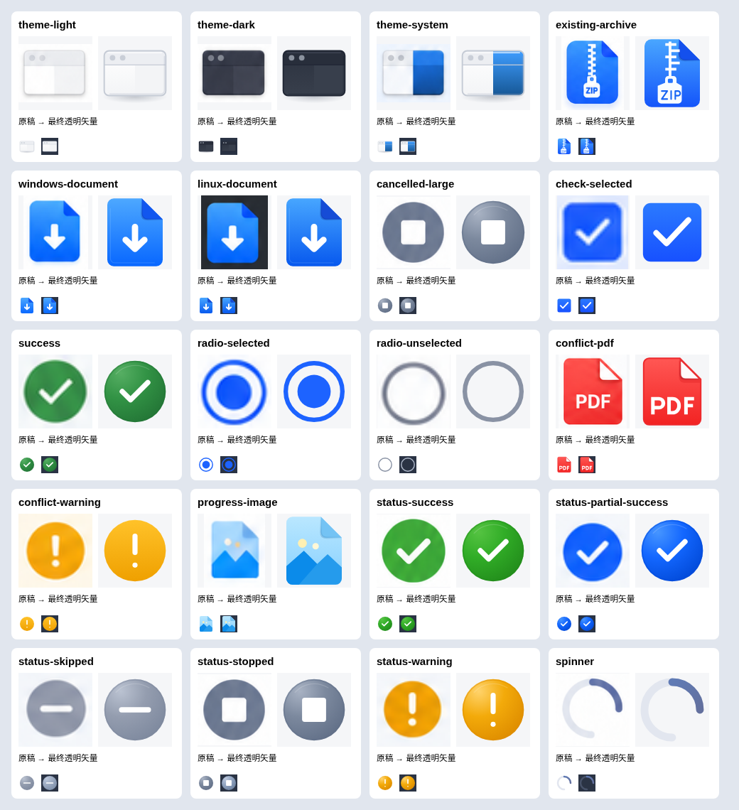
HTML 的实际消费
新品牌与独立灰色归档进入标题栏；主题卡片保留真实单选和方向键操作。状态页使用对应素材，取消终态是停止方块，停止中是 spinner。
主窗口
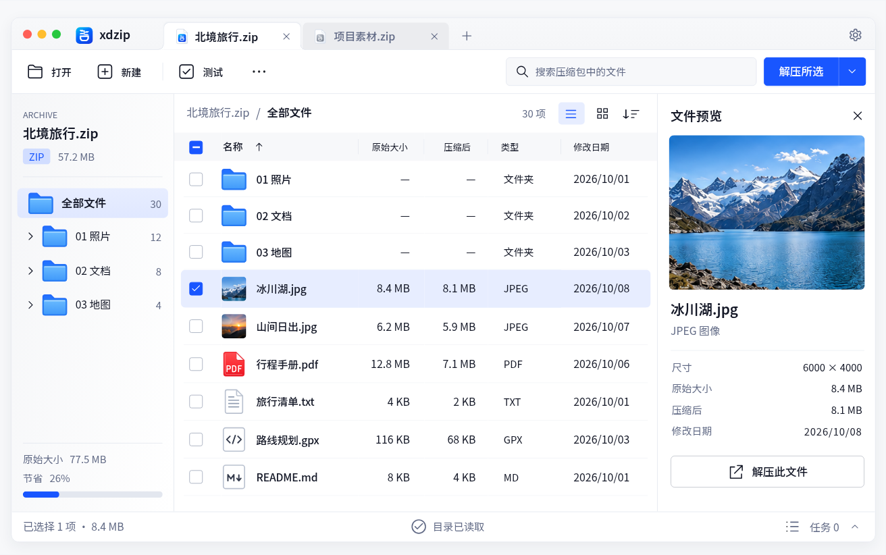
浅色设置 · 三个原生主题单选
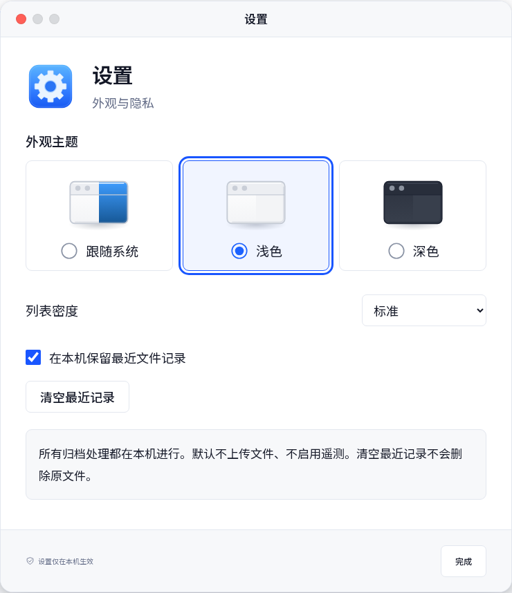
深色设置、覆盖确认与重名冲突
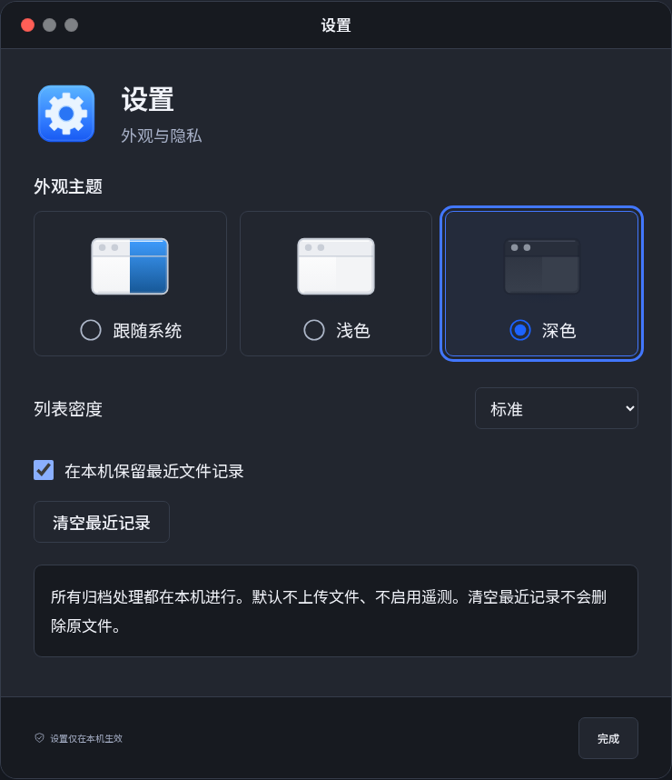
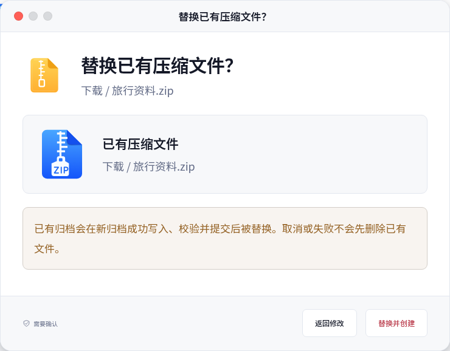
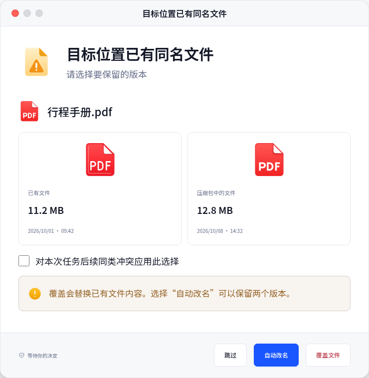
平台进度、停止中、取消与部分结果
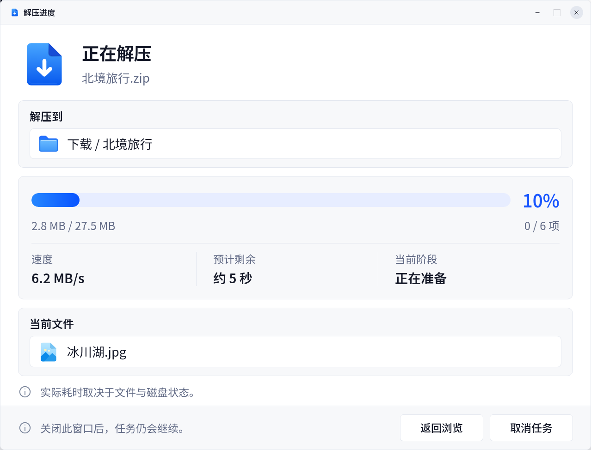
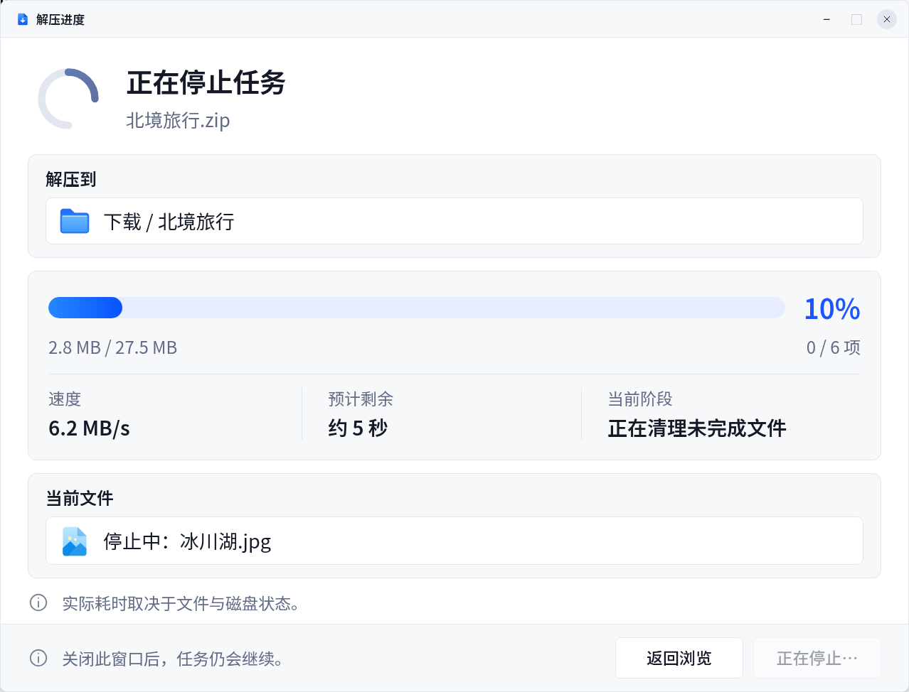
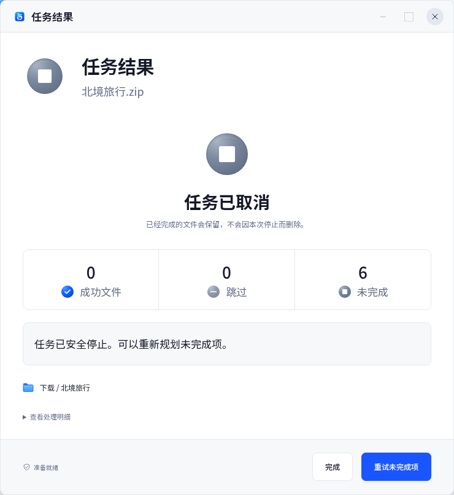
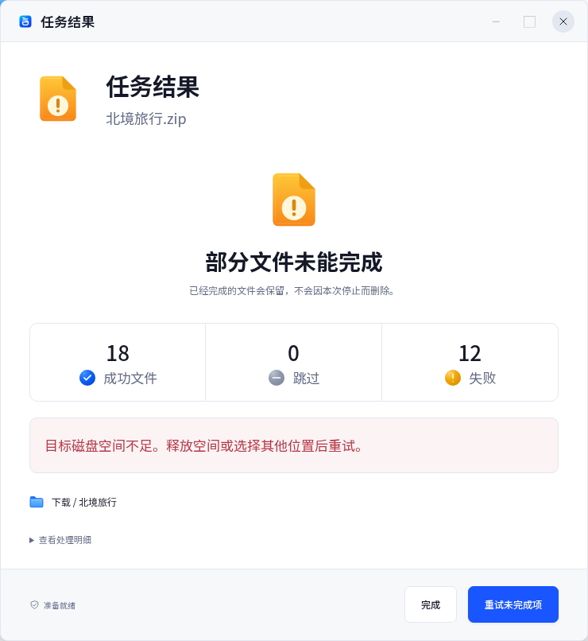
Qt 真实资源消费
应用图标为 512 PNG，标题栏使用同源的浅深色 3× PNG。以下图片来自 Linux Qt 6.8.2 软件渲染；它们不代替目标系统 Finder、Dock 或 Explorer 的实际显示核对。
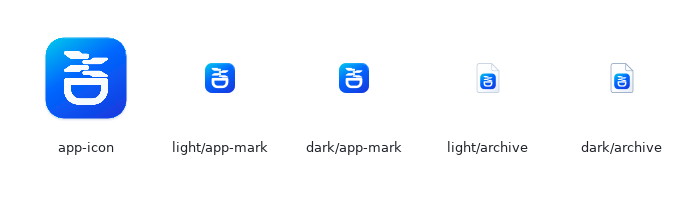
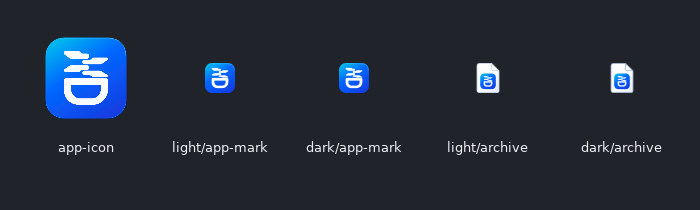
Qt 浏览应用的实际浅深色窗口
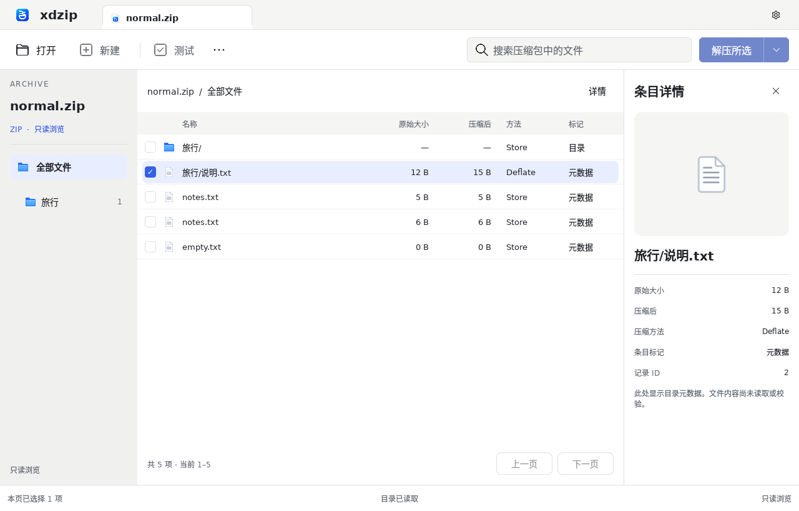
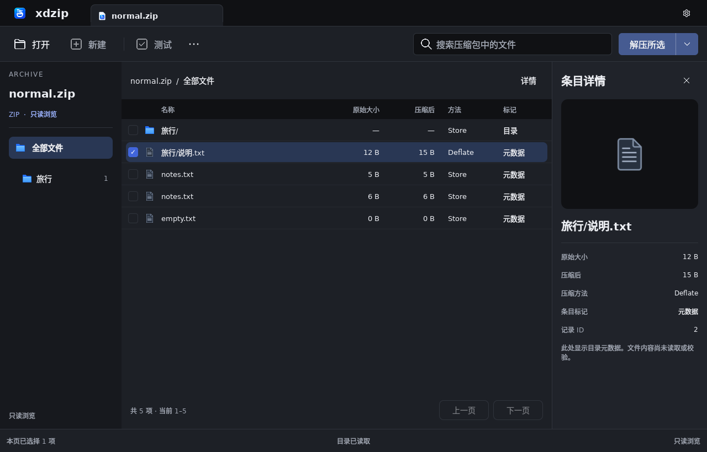
关联文件的 SVG、PNG、ICO 与 ICNS 已提供。当前没有注册文件关联或修改默认打开应用。生产图是可维护的矢量重绘，折角投影、拉链微字与字形仍有重绘差异。